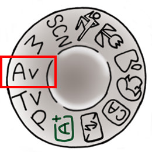

Photography Basic | Part 9
Aperture-priority AE (AV mode)
Want to create photographs with a lovely background blur (bokeh effect), or perhaps ensure that everything in the image remains in focus? The Aperture-priority AE mode is a convenient mode to use for achieving those effects. Let’s look at this mode in closer detail.
Aperture-priority AE mode: Enables you to adjust the degree of bokeh effect
Points-to-note
-You decide on the f-number, and the camera sets the shutter speed accordingly.
-The range of f-numbers you can set depends on the lens used.
Aperture-priority AE mode is a shooting mode that is useful for when you want to create a bokeh effect in your photos, or ensure that everything in the frame is in focus. This is because it gives you control over the aperture setting (f-number), which is a major key to adjusting the degree of background blur (bokeh effect) and the area of the image that appears to be in focus.
In Aperture-priority AE mode, the photographer sets the f-number to a value that he believes is ideal for the image that he wants to create. The camera then automatically sets a shutter speed that it deems will result in the appropriate exposure for the user-defined f-number..

A small f-number results in a wider aperture. The area of the image that appears in focus will be smaller because of the shallower depth-of-field, but this means that you can create a bokeh effect in front and/or behind the area that appears in focus.On the other hand, a large f-number results in a narrower aperture. A larger area of the image will appear in focus due to the deeper depth-of-field, and this allows you to create a photo where everything in the frame is in focus. (For a recap and examples, refer to Camera Basics Part 1 | Aperture)
The smallest and largest f-number you can set depends on your lens, but generally, prime lenses tend to allow you to set smaller f-numbers than zoom lenses do.
When using Aperture-priority AE mode, do note that if you set an f-number that is too big , the shutter speed will slow down and increase the chance of camera shake. To counter that, make use of the ISO Auto mode.
The mode dial on your camera
To use Aperture-priority AE mode, turn your camera mode dial to [Av].
The Quick Control screen
A: Shutter speed
B: Aperture setting (f-number)
The photographer sets the aperture. The camera sets the shutter speed
After you set the f-number, the camera will automatically set an appropriate shutter speed. A small f-number will give you a greater, creamier bokeh effect, while a large f-number will increase the area of your image that appears in focus.
Usage example #1: For creating a creamy bokeh effect in the background
EOS 5D Mark III / EF50mm f/1.4 USM/ FL: 50mm/ Aperture-priority AE(f/1.4, 1/40 sec, EV+0.7)/ ISO 125/ WB: Auto
Creating a bokeh effect in the background makes your subject of interest stand out from everything else around it. When doing this, use the smallest f-number possible to get the creamiest effect. Bonus tip: For an even creamier effect, move closer to your subject of interest to defocus the background even further.
Usage example #2: When you want everything in the image to appear in focus
EOS 5D Mark III/ EF24-105mm f/4L IS USM/ FL: 24mm/ Aperture-priority AE (f/11, 1/50 sec, EV-0.3)/ ISO 100/ WB: Auto
Especially when there is a lot of distance between the elements in the frame that are closest to you and those furthest from you, set the f-number to a large number to ensure that all the elements appear in focus. In general, f/8 to f/16 is ideal. It also helps if you shoot from some distance away from your subject.